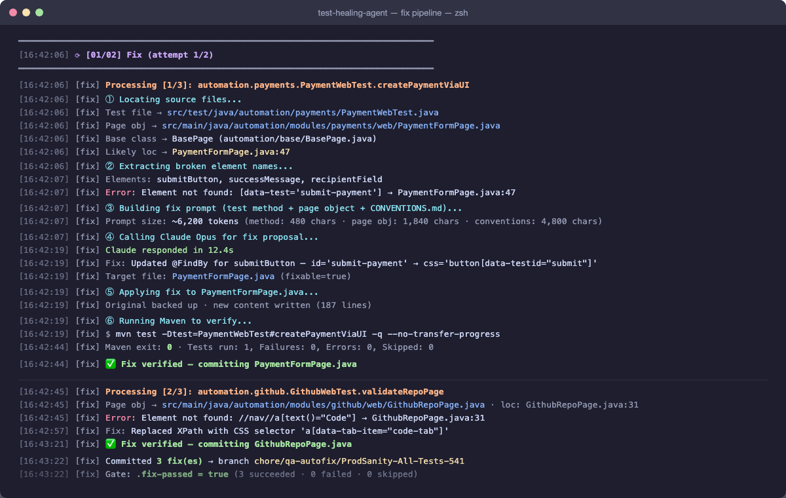
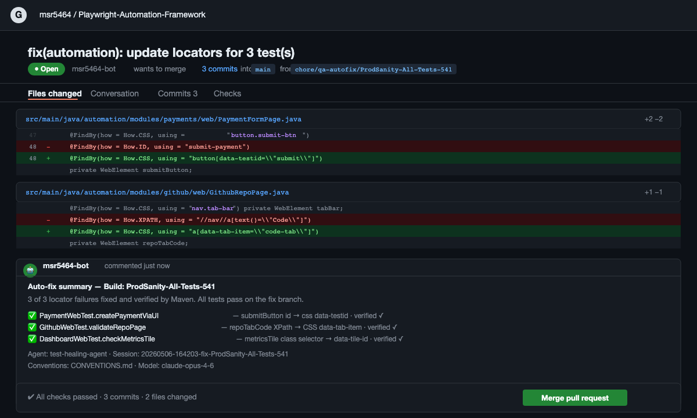
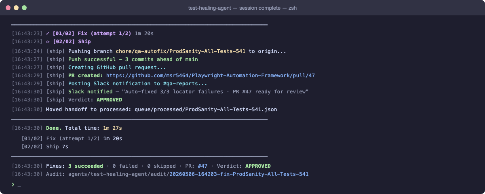

A UI change ships — a button gets a new data-test attribute, a modal gets a new class name. Three tests start failing with "Element not found." The healing agent finds the broken locator, identifies the correct selector, updates the Java page object, verifies the fix with Maven, and raises a GitHub PR. Engineers review the diff. They don't do the detective work anymore.
The Problem
Locator failures are the most common, most tedious category of automation breakage. A UI change ships — a button gets a new data-test attribute, a modal gets a new class name, a form field gets a new id. Three tests start failing with Element not found.
A QA engineer then has to: find which page object has the stale locator, figure out the new selector by opening DevTools and inspecting the element in staging, update the Java file, re-run the test locally to verify the fix works, then commit and push. That's 30–45 minutes per locator — multiplied by however many broke in this deployment.
The healing agent does all of this autonomously. It reads the failing test, finds the page object, asks Claude to propose a fix based on the error message, applies it, verifies it with Maven against the actual test, and commits or rolls back depending on the result.
AUTO_FIX_MAX_FIXES_PER_RUNMAX_FIX_ATTEMPTSHow It Gets Triggered
The healing agent is triggered by the triaging agent. After the 5-step triaging pipeline finishes, any failures classified as AUTOMATION_ISSUE + HIGH confidence + ELEMENT_NOT_FOUND are written to a JSON handoff file at:
agents/test-healing-agent/queue/<build-tag>.json
The healing agent reads this file and processes each failure in order, up to AUTO_FIX_MAX_FIXES_PER_RUN=5 per session. This prevents runaway commits on large deployments where many locators broke at once.

The Fix Pipeline (Per Failure)
For each failure in the handoff file, the agent runs the following sequence. If any step fails, it skips to the next failure and records the reason.
lib/code_analyzer.py takes the failing test class name and method name from the handoff file. It walks the Jarvis source tree to find:
- The test class file — e.g.
PaymentsWebTest.java - The page object file referenced in the failing method — e.g.
PaymentsPage.java
This is where the broken locator lives. The analyzer uses static analysis — parsing the test method body to find which page object methods are called, then resolving those methods to their file.
Claude Opus receives everything it needs to reason about the fix:
- The failing test method code — so it knows what action was being performed
- The full page object file — so it can see the stale locator in context with its surrounding methods
- The actual error message:
"Element not found: [data-test='submit-payment']" - The
CONVENTIONS.md/CLAUDE.mdframework rules — so it knows the correct Playwright selector patterns and naming conventions used in Jarvis
Claude returns a corrected version of the page object file — not a diff, the full file with the fix applied. The agent writes it to disk, replacing the original. The original is backed up to a temp location before the write, so rollback is lossless.
The agent runs the exact failing test method to verify the fix:
mvn test -Dtest=PaymentsWebTest#checkoutFlow
It reads test-results/report.json written by Jarvis's JsonTestReporter.java to determine pass or fail — not just the Maven exit code, which can be misleading.
Two outcomes:
- Test passes:
git add PaymentsPage.java && git commit -m "fix(payments): update stale locator in PaymentsPage" - Test fails: The original file is restored from the backup. The failure output — the new error message from Maven — is injected into the next Claude prompt so it can try a different selector approach. Up to
MAX_FIX_ATTEMPTS=2retries per test.

The agent processing three broken locators in sequence — locating source files, extracting element names, calling Claude Opus for a fix proposal, applying it, and verifying with Maven. Each ✅ means the fixed test passed before the change was committed.
The GitHub PR
Once all fixable tests are committed, 02_ship.py packages everything into a PR that an engineer can review and merge without needing to understand what changed or why:
A new branch is created: chore/qa-autofix/<build-tag>-<timestamp>. The branch name makes it immediately clear this is an automated fix and which build triggered it.
The branch is pushed to the Jarvis repository. All commits from the fix session are included — one commit per successfully fixed test.
The GitHub CLI creates the PR with a description listing every fix: which test, which file, what the old selector was, what the new one is, and whether it was verified by Maven. Tests that couldn't be fixed after 2 attempts are listed with the failure reason and marked NEEDS-REVIEW.
A message is posted to the QA channel: "Auto-fixed 3/4 locator failures in payments module — PR #47 ready for review". The PR link is included so an engineer can click straight to the diff.

The pull request raised automatically — showing the exact diff for each locator fix, the Maven verification result per test, and a summary comment from the agent. Engineers see what changed, why, and that it was verified before they review.
The Closed Loop
The full autonomous cycle
This is the loop that closes. The engineer touches two points: the merge decision and the product bug investigation. Everything in between — triage, fix, verification, PR — is autonomous.
The cycle time from CI failure to mergeable PR is typically under 15 minutes for a batch of 3–5 locator failures. That same batch manually would take a QA engineer 2–3 hours — find the failures, inspect the selectors, write the fixes, verify locally, open PRs.

The complete session summary — Ship step pushes the branch, opens the PR, posts the Slack notification, and prints timing per step. The entire cycle from queue pickup to mergeable PR: 1 minute 27 seconds.
Limits and Guardrails
The healing agent is deliberately conservative. Every design decision prioritises engineer visibility and control over raw throughput.
- MAX 5 FIXES AUTO_FIX_MAX_FIXES_PER_RUN — prevents runaway commits on large deployments. If 20 locators broke, the first 5 are fixed autonomously. The rest appear in the PR with a note that they need manual review.
- MAX 2 TRIES MAX_FIX_ATTEMPTS — if two attempts fail, the test is skipped with both attempts' failure outputs included in the PR description. Engineers get full context to fix it themselves.
- ELEM NOT FOUND ONLY Only ELEMENT_NOT_FOUND root cause qualifies for auto-healing. Timing and assertion failures require human judgement about whether to increase timeouts or revisit assertion logic.
- HIGH CONFIDENCE ONLY Medium and low confidence classifications from the triaging agent do not qualify. If the triaging agent isn't sure, the healing agent doesn't attempt it.
- PR ALWAYS RAISED Even if some fixes fail, a PR is created with what succeeded and detailed notes on what didn't. Engineers always have a single place to see the full picture of automated fix activity.
- DRY RUN MODE AUTO_PUSH=false skips the PR and logs what would have been fixed. Useful for validating the agent's behaviour in a new environment before enabling live commits.
The principle behind the guardrails
An agent that fixes tests perfectly 90% of the time but sometimes commits wrong changes in a way engineers can't trace is worse than no agent at all. Every guardrail here is about maintaining trust: the PR always shows what changed and why, the agent never commits silently, and the conservative qualification criteria mean false positives are extremely rare.
Engineers who review these PRs quickly learn to trust them — because the track record is clean and the failure cases are always surfaced transparently.
Next: Talk to Tests
The loop is closed. Now explore how your whole team can query the entire QA knowledge base in plain English — test plans, specs, runbooks, and live TestRail data, answered in seconds.